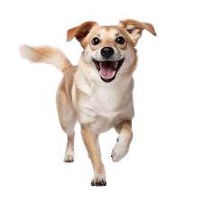
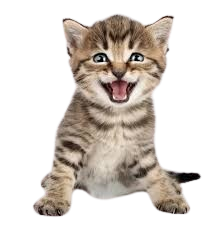
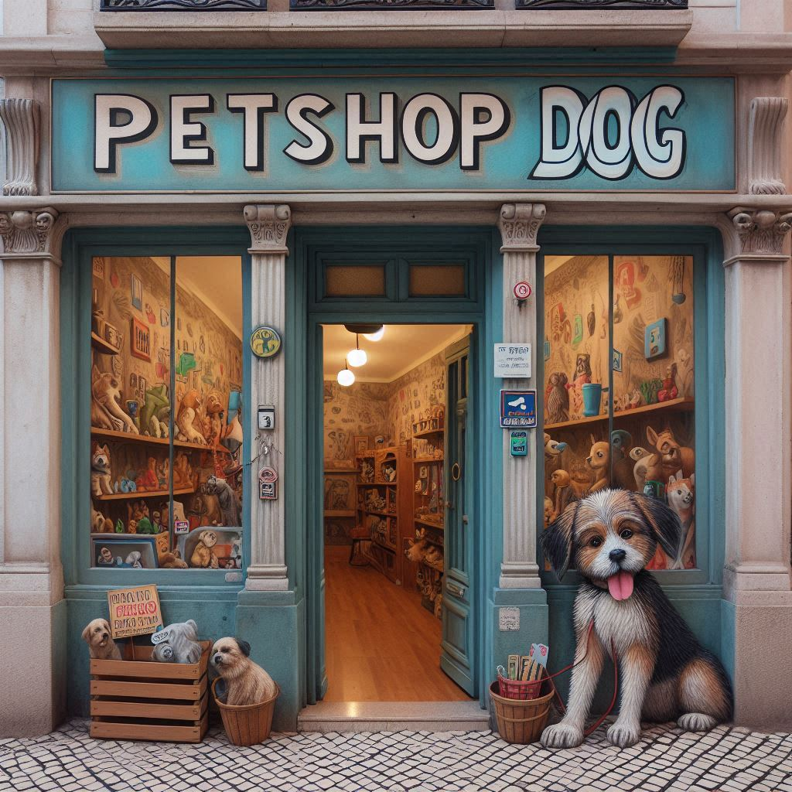

Bem-vindo ao Petshop DOG!
Somos mais do que apenas um petshop - somos apaixonados por cuidar dos seus amigos peludos como se fossem nossos próprios. Localizado no coração da cidade, o Petshop DOG oferece uma experiência única para você e seu amado pet.
Desde o momento em que você entra pela porta, você será recebido por nossa equipe calorosa e dedicada, pronta para ajudá-lo com todas as suas necessidades de cuidados com os animais. Com uma ampla gama de serviços, desde banho e tosa até consultas veterinárias, estamos aqui para garantir que seu pet receba o melhor tratamento possível.

Nossa Missão
Nossa missão é proporcionar não apenas produtos de alta qualidade, mas também um ambiente acolhedor e amigável, onde você e seu pet se sintam em casa. No Petshop DOG sinta-se livre para trazer qualquer tipo de pet, estamos aqui para garantir seu bem-estar e o cuidado.
Nós somos responsáveis por uma grande variedade de serviços:Banhos e Tosa,Consultas Veterinárias Até Pet Hotel,tudo para garantir o melhor conforto e segurança para seu pet

Nosso Local
Localizado no coração de Campo largo, o Petshop DOG é uma maravilha para os amantes de animais. Nosso espaço acolhedor e moderno oferece tudo o que você e seu pet precisam para uma experiência de cuidados completa e satisfatória.
Temos um longo caminho de produtos para seu cão experimentar!, mas além disso uma sala super preparada para realizar os serviços veterinários e de cuidados necessários, sinta-se em casa para trazer seu cão o quanto antes.
Venha nos fazer uma visita e descubra por que o Petshop DOG é o destino preferido para os amantes de pets em Campo Largo. Mal podemos esperar para recebê-lo!